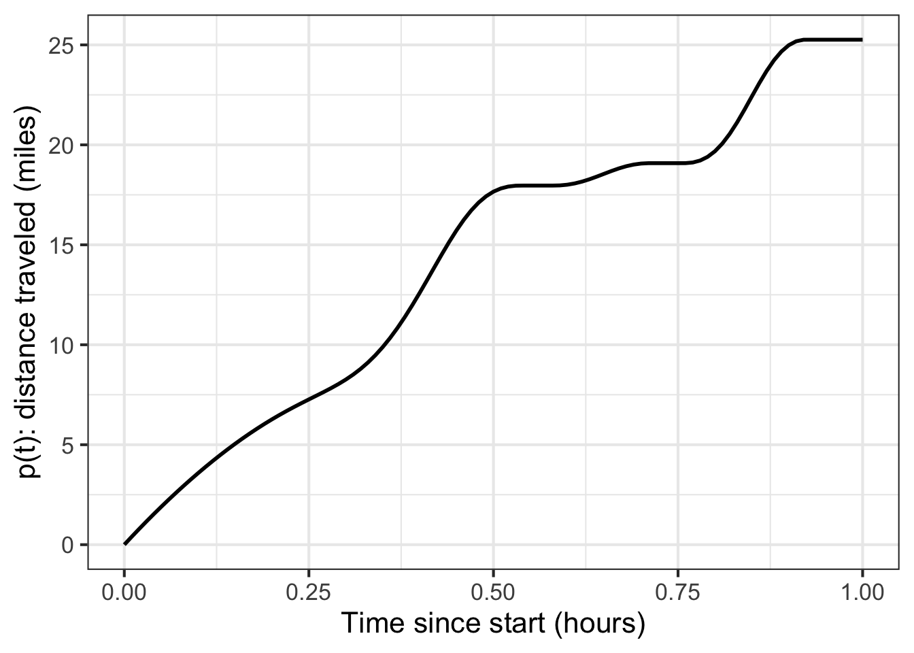
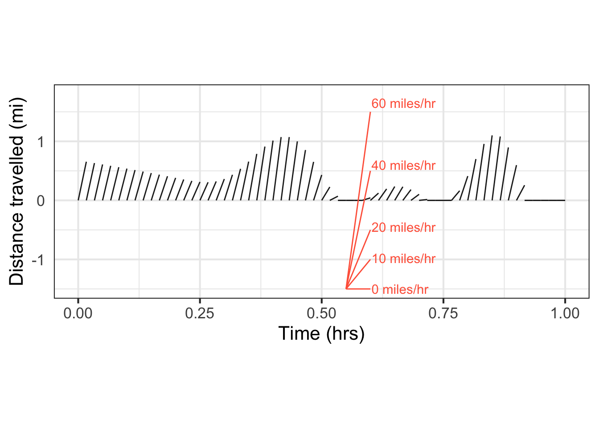
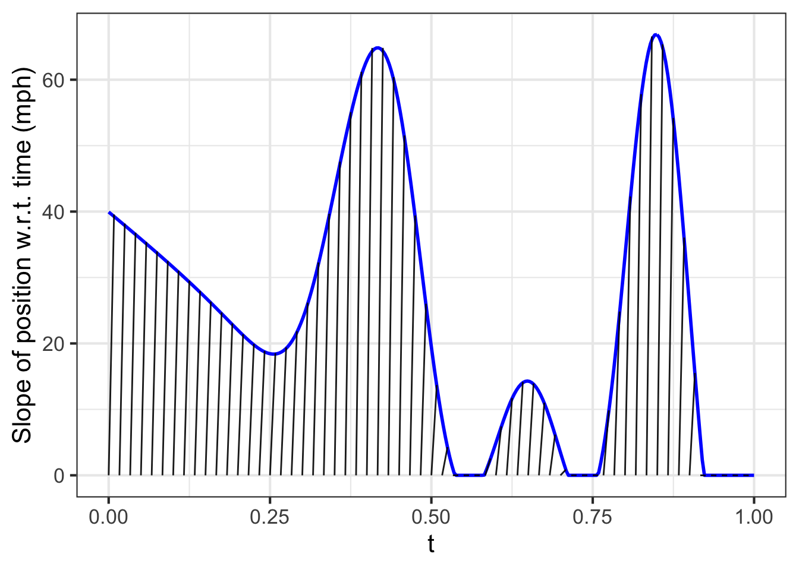
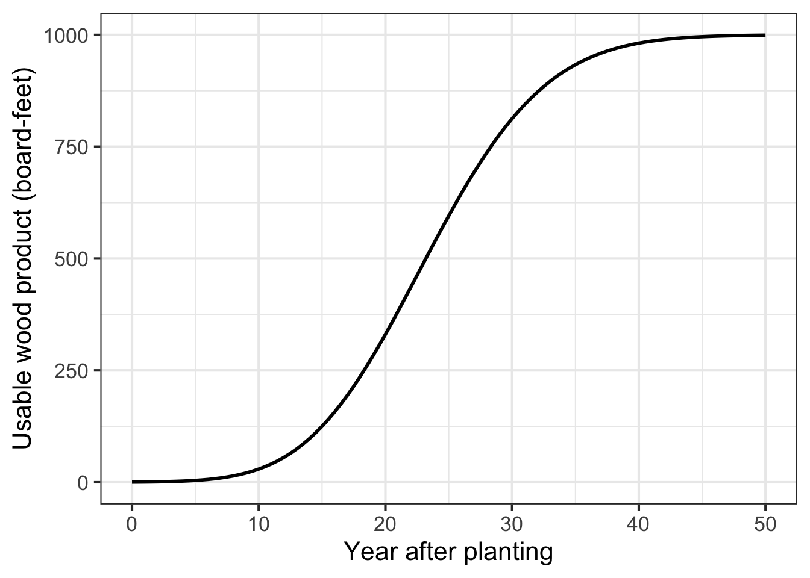
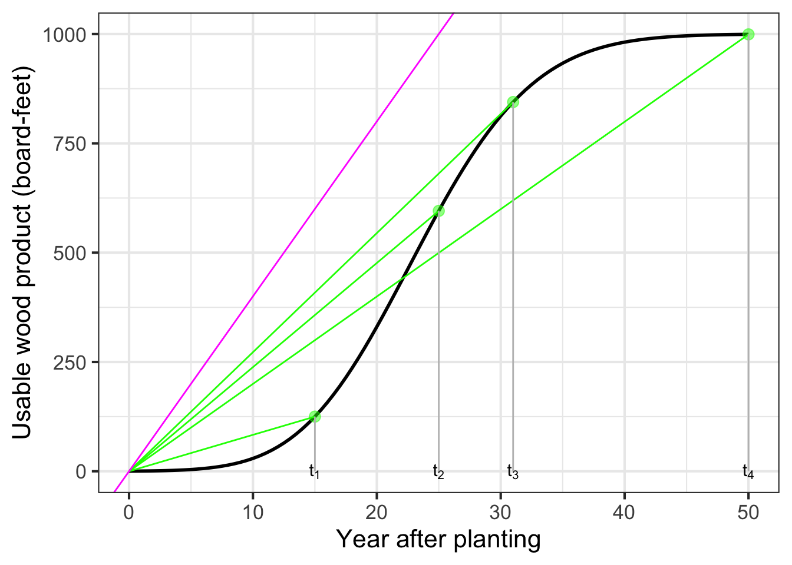
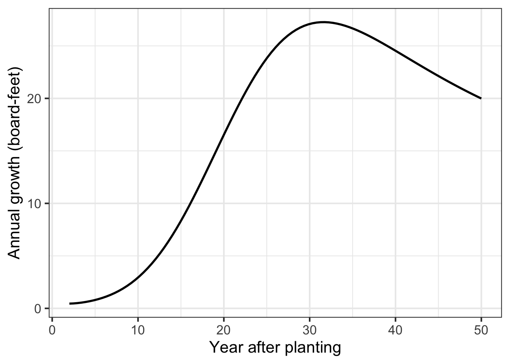

18 Rate of change
Imagine a car trip along a scenic road such as that shown in Figure 18.1. As the trip proceeds, the position varies; position is a function of time. The graph’s horizontal axis marks the elapsed time from the start of the trip. The vertical axis denotes the distance from the starting point.
At the end of the hour’s journey, the car’s position has changed by 25 miles from the start. The rate of change of the car’s position is a ratio: the change in position divided by the change in time: \[\frac{25\ \text{miles}}{1\ \text{hour}}\] Writing this as “25 miles per hour” is more compact, with the small word “per” doing the job of reminding that the quantity was produced by dividing change in position by change in time.
18.1 Outputs versus rates of change
Using functions to describe the car-trip situation, we can say that position is a function of time. We will call it \(p(t)\). The input to the function is time and the output is position.
A rate of change for the function can be calculated by choosing two different values for time and evaluating the function at those times. The evaluation produces two different values for the output position. Calling the two times \(t_0\) and \(t_1\), the corresponding outputs are \(p(t_0)\) and \(p(t_1)\).
The average rate of change of \(p(t)\) over the interval \(t_0 \leq t \leq t_1\) is \[\frac{p(t_1) - p(t_0)}{t_1 - t_0}\ .\] Section 15.2 showed that subtraction is legitimate only when the two quantities involved have the same dimension and units. That is the case here. \(p(t_1)\) and \(p(t_2)\) both have dimension L and miles as the unit. \(t_1\) and \(t_0\) both have dimension T and hours as the unit.
The division of \(p(t_1) - p(t_0)\) (dimension L) by \(t_1 - t_0\) (dimension T) is also dimensionally legitimate. The simple reason is that division of one quantity by another is always dimensionally legitimate. The division produces a quantity with dimension L/T.
A quantity with dimension L/T is utterly different than a quantity of dimension L or a quantity of dimension T. In other words, “25 miles per hour” is neither a position nor a time, it is a velocity.
One way to see that velocity is a different kind of quantity than position or time is that you measure the quantities in different ways. You might measure position by noting the passage of a mile marker along the side of the road. You can measure time by reference, say, to your level of boredom or by checking a clock or watch. Divide change in position by change in time to get velocity. But you can also sense velocity directly, by the level of noise in the car or the blurring of nearby objects along the road.
On a graph, you also measure in different ways changes in the input to a function and the corresponding changes in output. As always, start by picking the endpoints of an interval in the domain of the function. As an example, Figure 18.2 marks the endpoints of an interval with \(\color{magenta}{magenta}\) dots.
Draw a rectangle connecting the function values at the start and end of the interval. The change in input is the horizontal extent of the rectangle. The change in output is the vertical extent of the rectangle. If “vertical” and “horizontal” are enough to point out that the two measures are of different kinds of things, you will be reminded by your having to use two different scales for the two measurements.

Over the interval marked, the average rate of change of the function is still another kind of perceived quantity, the “slope” of the diagonal of the rectangle. Unfortunately, graphs do not typically include a scale for slope, but we have added a scale to Figure 18.3. From the slope scale, you can easily see that the average rate of change is a little less than 30 miles per hour.
18.2 Slope at a point
With a slope scale, you can dispense with the laborious process shown in Figure 18.2: marking an interval, drawing a rectangle, measuring the vertical change, etc. The slope scale lets you read off the rate of change at a glance: pick a point in the domain, look at the slope of the function at that point, and compare it to the slope scale.
Perhaps you can see that formally defining an interval isn’t an absolute necessity for defining a slope. The function has a slope at every point: the slope of the line tangent to the graph at that point. The easiest way to calculate the slope, at least approximately, is with a graphical aid called a “slope rose” (by analogy to the “compass rose” often printed on geographic maps.
The function’s slope at a specific input like \(t=0.2\) is called the instantaneous slope and corresponds to the instantaneous velocity of the car. , you do not have to measure the car’s velocity by reading the change in position over the interval between two distinct moments in time; you can simply look at the speedometer to get an instantaneous read-out of the velocity. We will translate instantaneous rate of change into the language of functions in Chapter 19.
18.3 Slope function
Another way of showing the car’s journey is to break the full 60-minute trip down into 1-minute intervals. During each such interval, we will graph the car’s distance from the place it was at the beginning of the interval, considering that place to be zero. The overall effect is to construct the car’s journey by 60 piecewise functions, each of which starts a position 0 and ends at the total distance travelled by the car during the 1-minute interval.
The distance-versus-time for each of the 60 segments is graphed in Figure 18.4. To orient you, consider a segment when the car’s speed is about 60 mph. During at the end of a one-minute segment, the car will travel 1 mile. When the car is driving more slowly, the distance at the end of the segment will be less.

Naturally, the slope of each segment in Figure 18.4 gives the speed of the car: distance divided by time. To aid the eye, a slope rose has been added showing a variety of speeds. Each of the red lines in the slope rose has a horizontal extent of 3 minutes. A car speeding at 60 mph for 3 minutes will travel 3 miles. You can confirm that the slope-rose segment for 60 mph runs vertically from -1.5 to 1.5 miles, that is, covering a distance of 3 miles in 3 minutes: 60 mph.
If you were to place each segment end-to-end on the previous segment, you would reconstruct the graph in Figure 18.3. Similarly, the sum of the vertical extents of all the segments in Figure 18.4 is the total distance travelled by the car in each hour.
The vertical extent of each segment in Figure 18.4 is the distance travelled in 1 minute. So we might as well interpret the vertical scale as the speed in miles per minute. Multiplying the vertical scale by 60 will convert the scale into units of miles per hour. Figure 18.5 is nothing more than this rescaled version of Figure 18.4. We drop the slope rose because Figure 18.5 lets us read the speed (mph) directly from the vertical axis scale.

You can see that the segments in Figure 18.5 vary pretty slowly. It seems fair to connect the ends of the segments with a continuous curve, the blue one shown in Figure 18.5. The blue curve lets us measure the speed of the car continuously, not just at the one-minute intervals.
In general, for a function \(p(t)\) the rate of change at any instant \(t\) over an interval of duration \(h\) will be \[{\cal D}_t p(t) \equiv \frac{p(t+h) - p(t)}{h}\] where \(h\) is the duraction of the interval used to compute the rate of change. We will call this the slope function of \(p(t)\). For the car trip, the slope function is essentially the blue curve in Figure 18.5.
18.4 Average rate of change
Chapter 19 introduces the instantaneous rate of change of a function. That concept is so important that you will tend to forget there was any such thing as the “average rate of change” over an interval.
Nevertheless, average rate of change can be a useful concept in many circumstances. To illustrate, Figure 18.6 shows a simplified model of the amount of usable wood harvestable from a typical tree in a managed forest of Ponderosa Pine. (You can see some actual forestry research models here.) Such a model, even if simplified, can provide useful insight for forestry planning.

The overall pattern in Figure 18.6 is that the tree continues to grow until year 50, when it seems to have reached an equilibrium: perhaps growth goes to zero, or rot balances growth.
If managing a forest for wood production, it seems sensible to try to get as much wood out of the tree as possible. The maximum volume of wood occurs, in Figure 18.6, at about year 50. Does that mean that harvesting at year 50 is optimal? If not, when is the best time?
—Do it yourself optimization.
Important
Try it! 18.2 Spend a moment thinking about Figure 18.6 and draw your own conclusions about when would be the most efficient time to harvest. Right or wrong, putting your own proverbial stake in the ground will help you understand the argument we are about to make.
Good forestry practices are “sustainable.” Forests are managed to be continually productive rather than subject to a one-time extraction of value followed by desolation. For sustainability, it is important to consider the life cycle of the forest. After all, continual productivity implies that the forest will continue to produce value into the indefinite future.
One implication of managing for sustainability is that the quantity to optimize is not the volume of wood from a one-time harvest. Rather, it is the rate (per year) at which wood can be sustainably extracted from the forest.
Around year 25, the tree adds usable wood at the fastest instantaneous rate. This might suggest to some that a good time to harvest is near year 25. But, in fact, it makes no sense to harvest at the time of maximum rate of growth; why kill the tree when it is being most productive?
A better quantity to look at for deciding when to harvest is the average rate of growth in the volume of wood. Remember that “average rate of change” is the rate of change over an extended interval. For wood harvesting, the relevant interval is the time from planting until harvest.
Harvesting at year 25 will give a total change of 600 board feet over 25 years, corresponding to an average rate of change of \(600 \div 25 = 24\ \text{board-feet-per-year}\). But if you wait until year 35, you will have about 900 board feet, giving an average rate of change of \(900 \div 35 = 25.7\) board-feet-per-year (L3 T-1).
It is easy to construct a diagram that indicates whether year 35 is best for the harvest. Recall that our fundamental model of change is the straight-line function. So we will model the model of tree growth as a straight-line function. Like the model in Figure 18.6, our straight-line model will start with zero wood when planted. Furthermore, to be faithful to Figure 18.6, we will insist that the straight-line intersect or touch that curve.
Figure 18.7 reiterates the Figure 18.6 model of the tree annotated with several straight-line models that all give zero harvest-able wood at planting time. Each green line represents a scenario where harvest occurs at \(t_1\), \(t_2\), etc. From the perspective of representing the rate of growth per year from planting to harvest, the straight-line green models do not need to replicate the actual growth curve. The complexities of the curve are not relevant to the growth rate. Instead, what’s relevant is the slope of a straight-line model connecting the output at planting time to the output at harvest time. In contrast, the magenta curve is not a suitable model because it does not match the situation at any harvest time; it does not touch the curve anywhere after planting!

Choose a harvest time that produces the steepest possible green segment to maximize average lumber volume per year. From Figure 18.7, that steepest line glances the growth curve near year 31 (shown as \(t_3\) in the diagram).
It is best to find the argmax by creating a function that shows explicitly what one is trying to optimize. (Chapter 24, uses the name objective function to identify such a function.) Here, the objective function is \(\text{ave.growth(year)} \equiv \text{volume(year)} / \text{year}\). See Figure 18.8.

The graph of ave_growth(year) makes clear the maximum average growth from planting to harvest will occur at about year 32.
There is no point waiting until after year 50.
At year 25, the tree is growing as fast as ever. You will get about 600 board feet of lumber.1 Should you harvest at year 25? No! That the tree is growing so fast means that you will have a lot more wood in years 26, 27, etc. The time to harvest is when the growth is getting smaller so that it is not worth waiting an extra year.
18.5 Dimension of a rate of change
The function named \(\partial_t f(t)\) which is the derivative of \(f(t)\) takes the same input as \(f(t)\); the notation makes that pretty clear. Let’s suppose that \(t\) is time and so the dimension of the input is \([t] = \text{T}\).
The outputs of the two functions, \(\partial_t f(t)\) and \(f(t)\) will not, in general, have the same dimension. Why not? Recall that a derivative is a special case of a slope function, the instantaneous slope function. It is easy to calculate a slope function:
\[{\cal D}_t f(t) \equiv \frac{f(t+h) - f(t)}{h}\] The dimension of the quantity \(f(t+h) - f(t)\) must be the same as the dimension of \(f(t)\); the subtraction would not be possible otherwise. Likewise, the dimension of \(h\) must be the same as the dimension of \(t\); the addition \(t+h\) wouldn’t make sense otherwise.
Tip
Keep in mind that the dimension \([f(t+h) - f(t)]\) will be the same as \([f(t)]\). Why? The result of addition and subtraction will always have the same dimension as the quantities being combined.
Whereas the dimension of the output \(f(t)\) is simply \(\left[f(t)\right]\), the dimension of the quotient \(\frac{f(t+h) - f(t)}{h}\) will be different. The output of the derivative function \(\partial_t f(t)\) will be \[\left[\partial_t f(t)\right] = \left[f(t)\right] / \left[t\right] .\]
Suppose \(x(t)\) is the position of a car as a function of time \(t\). Position has dimension L. Time has dimension T. The function \(\partial_t x(t)\) will have dimension L/T. Familiar units for L/T are miles-per-hour, which you can recognize as velocity.
Another example: Imagine a function pressure() with that takes altitude above sea level (in km) and output pressure (in kPa, “kiloPascal”).2 The derivative function, let’s call it \(\partial_\text{altitude} \text{pressure}()\), also takes an input in km, but produces an output in kPA per km: a rate.